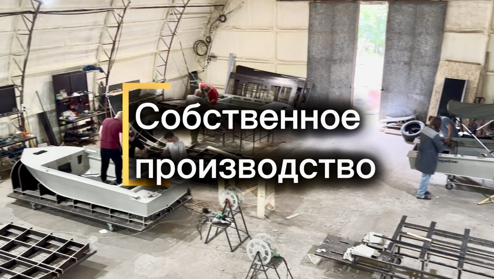
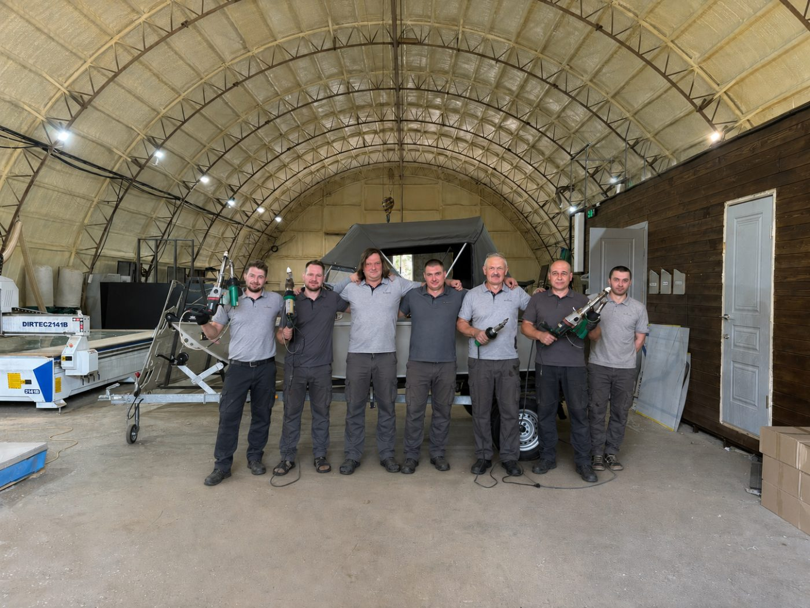

О нас в кадре
Посмотрите, как мы работаем и что делаем для наших клиентов

О компании Стрежень
В 2024 году мы основали производство моторных лодок «Стрежень» из листового полипропилена. Это современный, легкий материал, позволяющий быстро выходить на глисс и дающий легкость в управлении на воде.
Каждая наша моторная лодка относится к категории «нерегистрат», т.е. имеет вес до 200 кг в полностью снаряженном состоянии, не требует прав и регистрации, а значит идеально подойдёт следующим категориям покупателей:
- кто только начинает свой путь в навигации: для охоты, рыбалки или отдыха
- тем, у кого уже есть лодка ПВХ, ПНД, резиновая, пластиковая, самодельная или старая, металлическая — для перехода на новый уровень
Мы не экономим на материалах, не собираем «на глаз», а проектируем с помощью профессиональных инженерных программ, рассчитываем нагрузку на каждый элемент, изготавливаем на современном, высокоточном оборудовании и проводим испытания каждой модели на воде. Пишите или звоните — подберём Вам лодку мечты и предложим все необходимые аксессуары.
Название «Стрежень» неслучайно. В речном деле стрежень — это самое быстрое и глубокое течение реки. Мы стремимся передать вам частичку нашей любви к воде через нашу продукцию.

Качество в деталях
Наша базовая лодка соответствует заявленным параметрам — мы не экономим на материалах
Усиленный корпус
Продуманная система усилителей обеспечивает жёсткость конструкции и устойчивость к нагрузкам при активной эксплуатации. Инновационные инженерные решения нашего бюро.
Влагостойкая фанера
Пол из влагостойкой фанеры, а не из пластика. Надёжное и практичное решение, которое служит долгие годы без потери свойств.
Нержавеющая сталь
Швартовые утки, петли и иные комплектующие из дорогой и качественной нержавеющей стали. Всё входит в базовую стоимость лодки.
Блоки плавучести
Встроенные блоки плавучести обеспечивают непотопляемость лодки даже при полном заполнении водой. Безопасность превыше всего.
Преимущества полипропилена
Прочность
Полипропилен — необычайно прочный материал. Топляки, камни, отмели — на наших лодках можно забыть о таких опасностях и смело проходить любые препятствия!
Долговечность
Полипропилен нейтрален к агрессивным средам, включая солёную воду. Наши лодки можно использовать даже в морских регионах. Материал не подвержен коррозии.
Безопасность
Полипропилен обладает положительной плавучестью — он легче воды! Дополнительно во всех лодках установлены блоки плавучести для максимальной безопасности.
Простой уход
Материал сохраняет цвет долгие годы и не требует покраски. Помыть лодку и привести её в состояние новой можно обычной автомобильной мойкой!
Гарантия 3 года
Мы уверены в качестве наших лодок и предоставляем гарантию сроком один год на все изделия. Это не просто формальность — мы действительно несём ответственность за каждую лодку, которая выходит из нашего производства.
Сервисное обслуживание — мы не бросаем клиентов после покупки. Наша мастерская всегда открыта для технического обслуживания, ремонта и модернизации вашей лодки.
Честные цены — мы не накручиваем лишнего. Цена складывается из стоимости качественных материалов и работы наших мастеров. Никаких скрытых платежей и неожиданных доплат после заказа.

Ваши рекомендации
Мы делаем лодки для Вас и ценим каждое мнение. Напишите нам — мы будем лучше вместе с Вами.
Пишите на info@strezhen-boat.ru или оставьте сообщение через форму.
Написать рекомендациюОстались вопросы?
Мы всегда рады помочь! Позвоните нам или напишите — ответим на все вопросы о наших лодках.